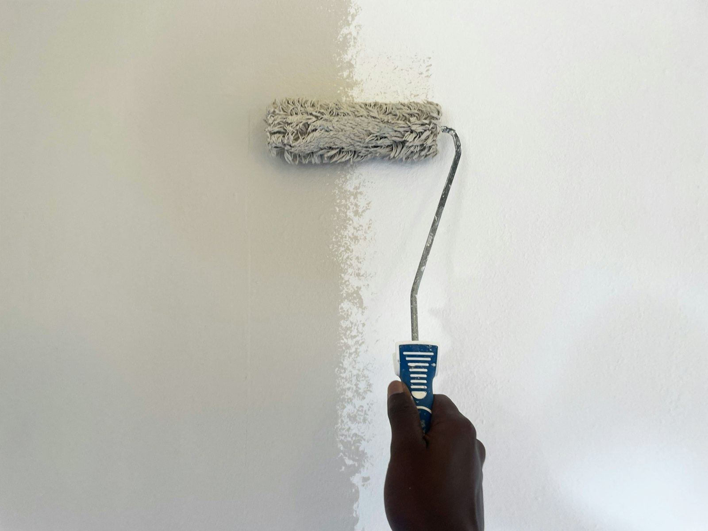
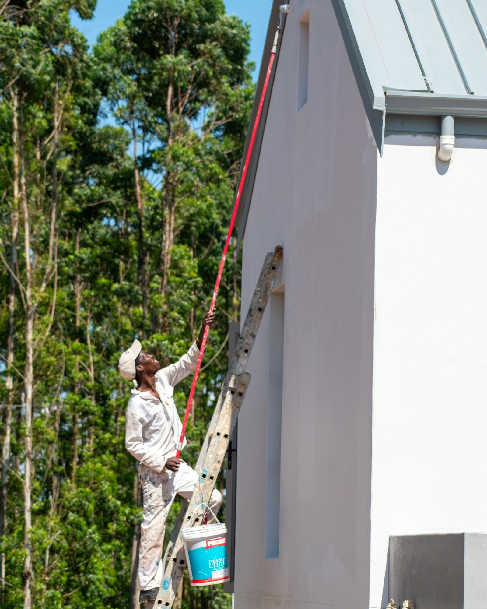
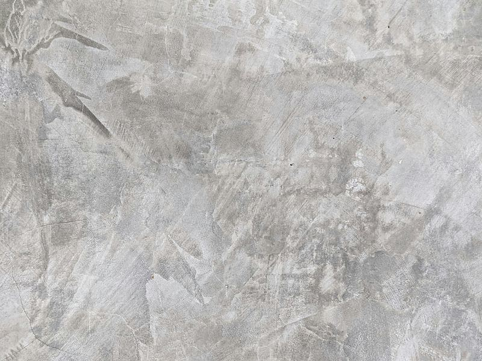
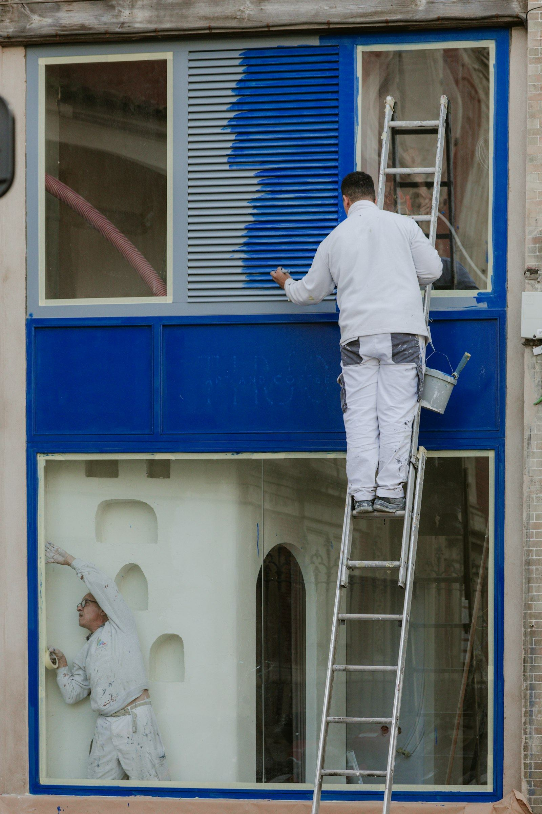
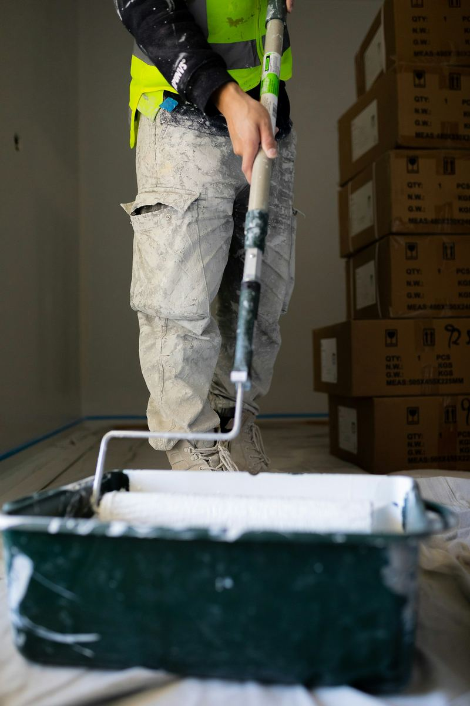

Malování bytů a domů
Pokoje, chodby, schodiště i celé domy. Nábytek a podlahy před malováním zakryjeme.
Blahoslav Dohnal z Krnova. Vymalujeme byt i dům, natřeme okna, dveře a fasádu a uděláme i dekorativní stěrku.
Volat můžete kdykoli, i o víkendu.

Od vymalování jednoho pokoje po nátěr celé fasády.

Pokoje, chodby, schodiště i celé domy. Nábytek a podlahy před malováním zakryjeme.

Stěna s jemnou strukturou a hloubkou, třeba v šedé nebo okrové.

Nátěry fasád rodinných domů i menších budov.

Okna, dveře a zárubně, ploty, zábradlí i radiátory.
Blahoslav Dohnal maluje pod svým jménem od října 1992. Najdete ho pod Cvilínem, na Vaškově ulici v Krnově.

Vyberte odstín a podívejte se, jak by pokoj vypadal. Spočítáte si tam i plochu, kterou budete malovat, a rovnou nám pošlete poptávku.
Tři kroky od telefonátu po vymalovaný pokoj.
Kdykoli na 603 907 858. Řeknete, co a kde potřebujete vymalovat nebo natřít.
Přijedeme se podívat, změříme plochu a řekneme vám cenu.
Zakryjeme nábytek a podlahy a vymalujeme v domluveném termínu.